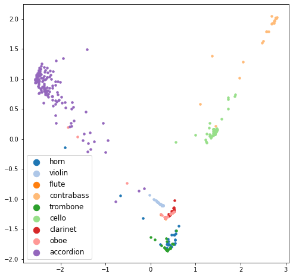

Model preparation
Contents
from model import WordAudioSiameseNetwork
from loss import TripletLoss
from dataset import WordAudioDataset
from data_prep import prepare_zsl_split_word_audio
from transforms import get_transforms
from model_manager import ModelManager
from utils import *
import torch
import torch.optim as optim
from torch.utils.data import DataLoader
from torch.optim.lr_scheduler import ReduceLROnPlateau
from collections import defaultdict
from tqdm import tqdm
import numpy as np
import pandas as pd
import pickle
Model preparation#
device = torch.device("cuda:0" if torch.cuda.is_available() else "cpu")
siamese_network = WordAudioSiameseNetwork().to(device)
triplet_loss = TripletLoss(0.5).to(device)
_, mel_transform = get_transforms()
optimizer_siamese = optim.Adam(siamese_network.parameters(), lr=0.01)
exp_lr_scheduler = ReduceLROnPlateau(
optimizer_siamese,
mode='min',
factor=0.2,
patience=5,
verbose=True
)
curr_model = ModelManager(
siamese_network,
triplet_loss,
optimizer_siamese,
exp_lr_scheduler,
device
)
curr_model.load_model('./checkpoints/word_audio_221129/w_ep-00195_l-0.0308.pth')
Loading model done: ./checkpoints/word_audio_221129/w_ep-00195_l-0.0308.pth
Data split preparation#
(
seen_word_classes,
seen_audio_X_train,
seen_audio_y_train,
seen_audio_X_test,
seen_audio_y_test,
unseen_word_classes,
unseen_audio_X_train,
unseen_audio_y_train,
unseen_audio_X_test,
unseen_audio_y_test,
inst_word_emb_dict
) = prepare_zsl_split_word_audio()
1. Seen class prediction#
seen_word_audio_dataset_tr = WordAudioDataset(
audio_path_list = seen_audio_X_train,
audio_label_list = seen_audio_y_train,
audio_transform = mel_transform,
curr_word_classes = seen_word_classes,
word_emb_dict = inst_word_emb_dict
)
seen_word_audio_dataset_ts = WordAudioDataset(
audio_path_list = seen_audio_X_test,
audio_label_list = seen_audio_y_test,
audio_transform = mel_transform,
curr_word_classes = seen_word_classes,
word_emb_dict = inst_word_emb_dict
)
seen_word_audio_dataloaders = {}
seen_word_audio_dataloaders['train'] = DataLoader(
seen_word_audio_dataset_tr,
batch_size=16,
num_workers=8,
shuffle=True
)
seen_word_audio_dataloaders['test'] = DataLoader(
seen_word_audio_dataset_ts,
batch_size=16,
num_workers=8,
shuffle=True
)
(
seen_tr_audio_embs,
seen_tr_word_embs,
seen_tr_labels,
seen_tr_loss
) = curr_model.infer_all(seen_word_audio_dataloaders, 'train')
100%|███████████████████████████████████████████████████████████████████████████████████████████████████| 1738/1738 [01:22<00:00, 21.15it/s]
train Loss: 0.0216
(
seen_ts_audio_embs,
seen_ts_word_embs,
seen_ts_labels,
seen_ts_loss
) = curr_model.infer_all(seen_word_audio_dataloaders, 'test')
100%|█████████████████████████████████████████████████████████████████████████████████████████████████████| 437/437 [00:20<00:00, 21.36it/s]
test Loss: 0.0443
seen_class_to_word_embs = defaultdict(list)
for i in tqdm(range(seen_tr_audio_embs.shape[0])):
seen_class_to_word_embs[seen_tr_labels[i]].append(seen_tr_word_embs[i])
seen_class_to_mean_word_emb = {}
for _c in seen_class_to_word_embs:
seen_class_to_mean_word_emb[_c] = seen_class_to_word_embs[_c][0] # same embeddings
100%|███████████████████████████████████████████████████████████████████████████████████████████████| 1738/1738 [00:00<00:00, 569864.01it/s]
# seen_class_to_audio_embs, seen_class_to_word_embs = defaultdict(list), defaultdict(list)
# for i in tqdm(range(seen_tr_audio_embs.shape[0])):
# seen_class_to_audio_embs[seen_tr_labels[i]].append(seen_tr_audio_embs[i])
# seen_class_to_word_embs[seen_tr_labels[i]].append(seen_tr_word_embs[i])
# for i in range(len(list(seen_class_to_audio_embs.keys()))):
# print(seen_word_classes[i], len(seen_class_to_audio_embs[i]), len(seen_class_to_word_embs[i]))
# seen_class_to_mean_audio_emb, seen_class_to_mean_word_emb = {}, {}
# for _c in seen_class_to_audio_embs:
# seen_class_to_mean_audio_emb[_c] = np.mean(seen_class_to_audio_embs[_c], axis=0)
# seen_class_to_mean_word_emb[_c] = seen_class_to_word_embs[_c][0] # same embeddings
1-1. Test set audio to seen word class prediction (supervised learning evaluation)#
correct = 0
for idx in range(seen_ts_audio_embs.shape[0]):
curr_pred_indices, _ = nearest_neighbor_clf_k(np.expand_dims(seen_ts_audio_embs[idx], 0),
seen_class_to_mean_word_emb,
seen_word_classes,
1)
if seen_ts_labels[idx] in curr_pred_indices:
correct += 1
print('Top-1 acc :', correct / seen_ts_audio_embs.shape[0])
Top-1 acc : 0.8901601830663616
1-2. Seen word to test set audio retrieval (supervised learning evaluation)#
## TODO
draw_pca(seen_ts_audio_embs, seen_ts_labels, seen_word_classes)

2. Unseen class prediction#
unseen_word_audio_dataset_tr = WordAudioDataset(
audio_path_list = unseen_audio_X_train,
audio_label_list = unseen_audio_y_train,
audio_transform = mel_transform,
curr_word_classes = unseen_word_classes,
word_emb_dict = inst_word_emb_dict
)
unseen_word_audio_dataset_ts = WordAudioDataset(
audio_path_list = unseen_audio_X_test,
audio_label_list = unseen_audio_y_test,
audio_transform = mel_transform,
curr_word_classes = unseen_word_classes,
word_emb_dict = inst_word_emb_dict
)
unseen_word_audio_dataloaders = {}
unseen_word_audio_dataloaders['train'] = DataLoader(
unseen_word_audio_dataset_tr,
batch_size=16,
num_workers=8,
shuffle=True
)
unseen_word_audio_dataloaders['test'] = DataLoader(
unseen_word_audio_dataset_ts,
batch_size=16,
num_workers=8,
shuffle=True
)
(
unseen_ts_audio_embs,
unseen_ts_word_embs,
unseen_ts_labels,
unseen_ts_loss
) = curr_model.infer_all(unseen_word_audio_dataloaders, 'test')
100%|█████████████████████████████████████████████████████████████████████████████████████████████████████| 146/146 [00:06<00:00, 21.27it/s]
test Loss: 0.4102
unseen_class_to_word_embs = defaultdict(list)
for i in tqdm(range(unseen_ts_word_embs.shape[0])):
unseen_class_to_word_embs[unseen_ts_labels[i]].append(unseen_ts_word_embs[i])
unseen_class_to_mean_word_emb = {}
for _c in unseen_class_to_word_embs:
unseen_class_to_mean_word_emb[_c] = unseen_class_to_word_embs[_c][0]
100%|█████████████████████████████████████████████████████████████████████████████████████████████████| 146/146 [00:00<00:00, 360853.50it/s]
# unseen_class_to_audio_embs, unseen_class_to_word_embs = defaultdict(list), defaultdict(list)
# for i in tqdm(range(unseen_tr_audio_embs.shape[0])):
# unseen_class_to_audio_embs[unseen_tr_labels[i]].append(unseen_tr_audio_embs[i])
# unseen_class_to_word_embs[unseen_tr_labels[i]].append(unseen_tr_word_embs[i])
# for i in range(len(list(unseen_class_to_audio_embs.keys()))):
# print(unseen_word_classes[i], len(unseen_class_to_audio_embs[i]), len(unseen_class_to_word_embs[i]))
# unseen_class_to_mean_audio_emb, unseen_class_to_mean_word_emb = {}, {}
# for _c in unseen_class_to_audio_embs:
# unseen_class_to_mean_audio_emb[_c] = np.mean(unseen_class_to_audio_embs[_c], axis=0)
# unseen_class_to_mean_word_emb[_c] = unseen_class_to_word_embs[_c][0]
2-1. Unseen audio to unseen word prediction (zero-shot evaluation)#
correct = 0
for idx in range(unseen_ts_audio_embs.shape[0]):
curr_pred_indices, _ = nearest_neighbor_clf_k(np.expand_dims(unseen_ts_audio_embs[idx], 0),
unseen_class_to_mean_word_emb,
unseen_word_classes,
1)
if unseen_ts_labels[idx] in curr_pred_indices:
correct += 1
print('Top-1 acc :', correct / unseen_ts_audio_embs.shape[0])
Top-1 acc : 0.3972602739726027
2-2. Unseen word to test set audio retrieval (zero-shot evaluation)#
## TODO
draw_pca(unseen_ts_audio_embs, unseen_ts_labels, unseen_word_classes)

Generalized ZSL evaluation#
all_word_classes = seen_word_classes + unseen_word_classes
all_ts_audio_embs = np.concatenate([seen_ts_audio_embs, unseen_ts_audio_embs])
all_ts_word_embs = np.concatenate([seen_ts_word_embs, unseen_ts_word_embs])
added_unseen_ts_labels = [_n + 9 for _n in unseen_ts_labels]
all_ts_labels = seen_ts_labels + added_unseen_ts_labels
all_ts_audio_embs.shape[0], all_ts_word_embs.shape[0], len(all_ts_labels)
(583, 583, 583)
all_class_to_word_embs = defaultdict(list)
all_class_to_word_seen_audio_embs = defaultdict(list)
for i in tqdm(range(all_ts_audio_embs.shape[0])):
all_class_to_audio_embs[all_ts_labels[i]].append(all_ts_audio_embs[i])
all_class_to_word_embs[all_ts_labels[i]].append(all_ts_word_embs[i])
for i in range(len(list(all_class_to_audio_embs.keys()))):
print(i, len(all_class_to_audio_embs[i]), len(all_class_to_word_embs[i]), len(all_class_to_audio_seen_word_embs[i]), len(all_class_to_word_seen_audio_embs[i]))
all_class_to_mean_audio_emb, all_class_to_mean_word_emb = {}, {}
for _c in all_class_to_audio_embs:
all_class_to_mean_audio_emb[_c] = np.mean(all_class_to_audio_embs[_c], axis=0)
all_class_to_mean_word_emb[_c] = np.mean(all_class_to_word_embs[_c], axis=0)
all_class_to_mean_audio_seen_word_emb, all_class_to_mean_word_seen_audio_emb = {}, {}
for _c in all_class_to_audio_seen_word_embs:
all_class_to_mean_audio_seen_word_emb[_c] = np.mean(all_class_to_audio_seen_word_embs[_c], axis=0)
all_class_to_mean_word_seen_audio_emb[_c] = np.mean(all_class_to_word_seen_audio_embs[_c], axis=0)
# all_class_to_audio_embs, all_class_to_word_embs = defaultdict(list), defaultdict(list)
# all_class_to_audio_seen_word_embs, all_class_to_word_seen_audio_embs = defaultdict(list), defaultdict(list)
# for i in tqdm(range(all_tr_audio_embs.shape[0])):
# all_class_to_audio_embs[all_tr_labels[i]].append(all_tr_audio_embs[i])
# all_class_to_word_embs[all_tr_labels[i]].append(all_tr_word_embs[i])
# all_class_to_audio_seen_word_embs[all_tr_labels[i]].append(all_tr_audio_embs[i])
# all_class_to_word_seen_audio_embs[all_tr_labels[i]].append(all_tr_word_embs[i])
# for i in range(seen_tr_audio_embs.shape[0]):
# all_class_to_audio_seen_word_embs[seen_tr_labels[i]].append(seen_tr_word_embs[i])
# all_class_to_word_seen_audio_embs[seen_tr_labels[i]].append(seen_tr_audio_embs[i])
# for i in range(len(list(all_class_to_audio_embs.keys()))):
# print(i, len(all_class_to_audio_embs[i]), len(all_class_to_word_embs[i]), len(all_class_to_audio_seen_word_embs[i]), len(all_class_to_word_seen_audio_embs[i]))
# all_class_to_mean_audio_emb, all_class_to_mean_word_emb = {}, {}
# for _c in all_class_to_audio_embs:
# all_class_to_mean_audio_emb[_c] = np.mean(all_class_to_audio_embs[_c], axis=0)
# all_class_to_mean_word_emb[_c] = np.mean(all_class_to_word_embs[_c], axis=0)
# all_class_to_mean_audio_seen_word_emb, all_class_to_mean_word_seen_audio_emb = {}, {}
# for _c in all_class_to_audio_seen_word_embs:
# all_class_to_mean_audio_seen_word_emb[_c] = np.mean(all_class_to_audio_seen_word_embs[_c], axis=0)
# all_class_to_mean_word_seen_audio_emb[_c] = np.mean(all_class_to_word_seen_audio_embs[_c], axis=0)
On unseen test set audio#
correct = 0
for idx in range(unseen_ts_audio_embs.shape[0]):
curr_pred_indices, _ = nearest_neighbor_clf_k(np.expand_dims(unseen_ts_audio_embs[idx], 0),
all_class_to_mean_word_emb,
all_word_classes,
3)
if added_unseen_ts_labels[idx] in curr_pred_indices:
correct += 1
print('Top-3 acc :', correct / unseen_ts_audio_embs.shape[0])
Top-3 acc : 0.17695473251028807
draw_pca(all_tr_audio_embs, all_tr_labels, all_word_classes)

Seen + unseen class embedding#
with open('./data/inst_glove_vector.p', 'rb') as f:
inst_word_emb_dict = pickle.load(f)
inst_word_embeddings, inst_word_classes = [], []
for word, emb in inst_word_emb_dict.items():
inst_word_embeddings.append(emb)
inst_word_classes.append(word)
zsl_word_embeddings, zsl_word_classes = [], []
for word_idx in range(7):
for k in range(len(seen_ts_labels)):
if seen_ts_labels[k] == word_idx:
zsl_word_embeddings.append(seen_ts_word_embs[k])
zsl_word_classes.append(seen_word_classes[word_idx])
break
for word_idx in range(7):
for k in range(len(unseen_ts_labels)):
if unseen_ts_labels[k] == word_idx:
zsl_word_embeddings.append(unseen_ts_word_embs[k])
zsl_word_classes.append(unseen_word_classes[word_idx])
break
zsl_word_embeddings = np.array(zsl_word_embeddings)
draw_pca_with_class(inst_word_embeddings, list(range(14)), inst_word_classes)

draw_pca_with_class(zsl_word_embeddings, list(range(14)), all_word_classes)